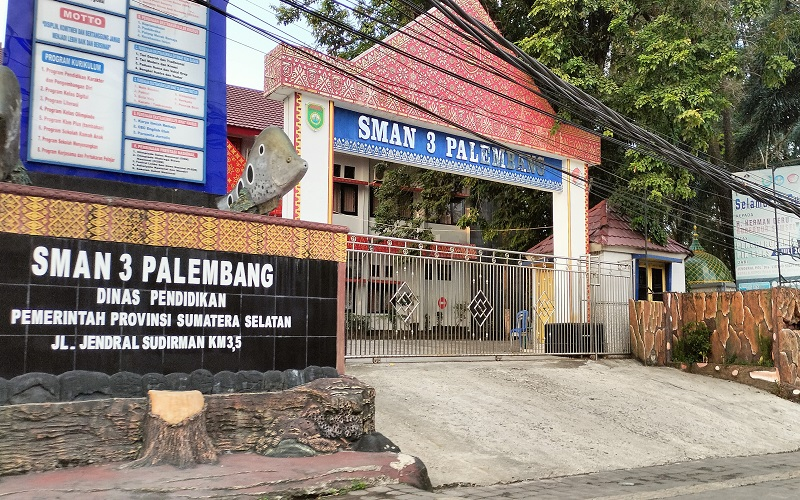
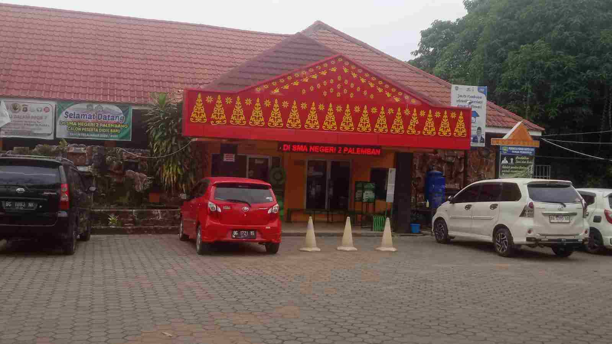
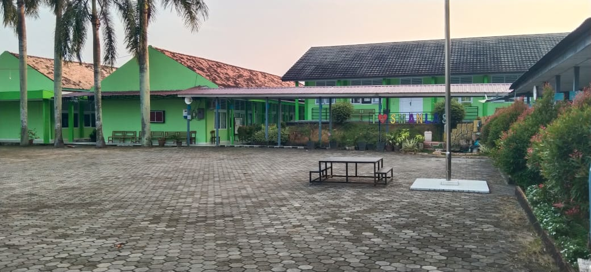
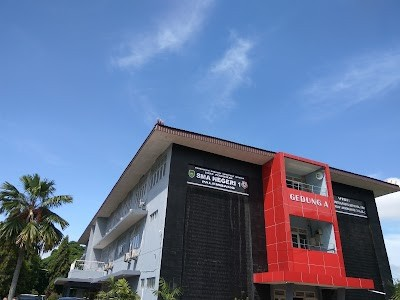
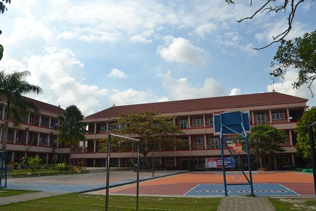

Yuk, kita cek peluangmu
lewat Jalur TKA
Berdasarkan nilai, jarak, dan daya tampung sekolah tujuan
Perhatian! Pastikan semua data terisi dan sesuai range.
Berdasarkan nilai, jarak, dan daya tampung sekolah tujuan
Sistem ini dirancang sebagai fondasi pengembangan mekanisme prediksi dalam proses Sistem Penerimaan Murid Baru (SPMB), dengan tujuan menghadirkan proses seleksi yang lebih transparan dan adil bagi seluruh pihak yang terlibat.





Prediksi yang dibuat dengan logika,
bukan asumsi
Prediksi disusun dari nilai minimal, rasio pendaftar, dan daya tampung tahun sebelumnya — bukan tebakan acak.
Setiap sekolah memiliki tingkat persaingan dan karakter seleksi yang berbeda, sehingga tidak bisa disamaratakan.
Sistem ini membantu memahami posisi kamu dalam persaingan, bukan memastikan kelulusan.
Peluang dihitung dengan membandingkan nilai kamu terhadap nilai peserta pada peringkat terbawah yang lolos TKA pada tahun sebelumnya di sekolah yang sama.
Informasi disajikan secara visual dan sederhana agar bisa dipahami siswa dan orang tua tanpa istilah teknis.
Prediksi ini dapat digunakan sebagai bahan pertimbangan sebelum menentukan strategi pilihan sekolah.
Mulailah mencoba
memprediksi
peluangmu!
Hitung posisi kamu dalam persaingan masuk SMA Negeri hanya dalam hitungan detik — tanpa asumsi.
Data tahun sebelumnya
Prediksi dibandingkan dengan nilai peserta peringkat terbawah yang lolos TKA di sekolah tujuan.
Estimasi Peluang Kamu
0%
* Prediksi dibuat berdasarkan data tahun sebelumnya dan tidak menjamin kelulusan. Digunakan sebagai bahan pertimbangan.
 , tetaplah membangun
, tetaplah membangun
 usaha, disiplin, dan persiapan
usaha, disiplin, dan persiapan